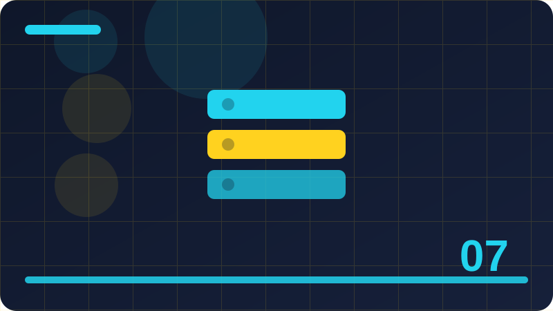

Chapter 7: Lists

Section 1
This section looks closely at What a list is, one building block inside Lists. It is worth slowing down here, because ideas that feel small at first often turn up again in much larger programs, and a clear understanding now will save you confusion later. Think of What a list is as a tool you are adding to a growing toolkit: you do not need to master every detail today, but you should know what it is for, when it helps, and what a sensible first example looks like. At its simplest, What a list is is about making your intention clear to both the computer and the next person who reads your code. The computer follows instructions literally, so vague thinking becomes a visible mistake, while clear thinking becomes a program that behaves as you expected. That is why examples in this section are deliberately small: with only a few lines to watch, you can see cause and effect without distraction, and you can trace exactly how each part contributes to the result. A short example is the best way to make What a list is concrete. Read the code slowly, line by line, and say what you think each line does before you run it. Then run it, compare the output with your prediction, and if they differ, treat that difference as useful information rather than a failure. Programmers learn more from a surprising result than from a result that merely confirms what they already believed, because surprise points to a gap in understanding. Beginners often stumble on What a list is for the same few reasons, and naming those reasons in advance makes them easier to avoid. One common problem is rushing past the example without running it, which leaves a fragile understanding that collapses at the first small change. Another is copying code without understanding it, which works until the copied code needs to be adapted. A third is changing several things at once, which makes it impossible to tell which change caused a new result. Beyond the first example, What a list is becomes useful when it is combined with ideas from earlier chapters. Programming is rarely about one idea in isolation; it is about combining small, reliable pieces into something larger. That is why this book returns to earlier ideas instead of leaving them behind. Each time you reuse an old idea in a new context, your understanding of both ideas deepens, and your programs become more flexible. To consolidate this section, try a tiny variation of the example before you continue. Change one value, one name, or one order, run the program again, and describe the difference in a sentence. That habit of deliberate variation is how programmers build intuition, and it takes only a few minutes. If you cannot explain the difference, you have found a useful question to investigate, and investigating it now will pay off in the next chapter.
fruits = ['apple', 'banana']
print(fruits[0])Check: What is the main idea behind What a list is in your own words?
Section 2
Begin with Creating a list, and with the question it helps you answer while you are learning Lists. Every new idea in programming earns its place by solving a real problem, not by sounding impressive, so this section starts from that problem. Once you can say in your own words why Creating a list exists, the details become much easier to remember, and the code you write afterwards tends to be clearer and more deliberate. The key to Creating a list is to connect the new idea with something you already understand. Programmers often explain a new concept by comparing it with an everyday action, such as sorting objects, following a recipe, or keeping a list, and that comparison helps at first. But an analogy is only a starting point: the section then moves from the everyday picture to the precise behaviour in Python, so that you are not misled when the real behaviour is slightly different from the picture. Work through the example for Creating a list as if you were the computer. Keep track of each value as it changes, and notice the order in which things happen, because order matters in programming far more than it does in ordinary writing. A line that looks harmless can change everything that follows, and a small change in order can turn a working program into one that behaves strangely. Tracing by hand is slow, but it builds the mental habit that makes debugging possible later. Watch out for the small details around Creating a list, because programming rewards attention to detail in a way that everyday language does not. A missing bracket, a misspelt name, or a value in the wrong place can stop a program or change its meaning, and the computer will not guess what you meant. This strictness can feel unfriendly at first, but it is also fair: the same code behaves the same way every time, so once you find a mistake, fixing it fixes the program reliably. Think about where Creating a list fits into a program you might actually want to write, such as a small tool, a game, a list manager, or a simple calculator. Real programs are built from the same building blocks you are learning here, repeated and combined in different ways. If you can picture a use for Creating a list outside this book, you are much more likely to remember it, and you will also start to notice it when you read other people's code. Before moving on, summarise Creating a list in two or three sentences of your own, without looking back at this section. Writing a summary forces you to decide what matters most, and it reveals gaps that silent reading can hide. If your summary feels vague, reread the example and try the variation exercise again. A short, accurate summary is a better sign of learning than a long page of notes copied from the text.
items = []
items.append('book')
print(items)Check: When would you use Creating a list in a small program?
Section 3
In Lists, Lists of different kinds of items is one of the ideas you will meet again and again, so it deserves a careful first look rather than a quick glance. This section explains the idea in plain language, shows a short example, and points out the mistakes that beginners most often make. You are not expected to memorise everything here; you are expected to recognise Lists of different kinds of items when you see it, to use it in a small program, and to know where to look when you need a reminder. When you meet Lists of different kinds of items, ask three questions before you write any code. First, what goes in? Second, what comes out? Third, what could go wrong if the input is empty, unusual, or not what you expected? Those three questions work for almost every topic in this book. They turn a passive reading exercise into an active investigation, and they prepare you to test your own code instead of hoping that it happens to be right. The example for Lists of different kinds of items is intentionally ordinary, because ordinary examples reveal the normal behaviour you will rely on every day. Fancy examples can impress, but they often hide the simple rule underneath layers of detail. Once the simple rule is clear, you can apply it to harder problems with confidence, and you will recognise the same rule when it appears inside a longer program written by someone else. As you practise Lists of different kinds of items, expect to make mistakes, and expect those mistakes to be informative. An error message is not a judgement on your ability; it is a clue, often pointing at the line where Python first noticed a problem. Read it, look at that line, and ask what Python expected to find there. Over time, you will start to recognise familiar messages and fix them quickly, which is one of the clearest signs that you are becoming a programmer. There is no single correct way to use Lists of different kinds of items in every situation, and part of learning programming is developing judgement about trade-offs. A shorter solution is not always clearer, and a more general solution is not always better for a small task. For now, favour the version that you can explain to someone else, because code that is easy to explain is usually easy to fix, easy to extend, and easy to trust. Finally, remember that Lists of different kinds of items is a step, not a destination. You will use it, forget parts of it, and relearn it in a richer context as your programs grow. That cycle is normal, and it is not a sign that you have failed to learn. Return to this section whenever you need it, use the idea in a real small program, and let repeated use turn a new idea into a familiar tool.
nums = [3, 1, 2]
nums.sort()
print(nums)Check: What mistake are beginners most likely to make with Lists of different kinds of items?
Section 4
This section looks closely at Empty lists, one building block inside Lists. It is worth slowing down here, because ideas that feel small at first often turn up again in much larger programs, and a clear understanding now will save you confusion later. Think of Empty lists as a tool you are adding to a growing toolkit: you do not need to master every detail today, but you should know what it is for, when it helps, and what a sensible first example looks like. At its simplest, Empty lists is about making your intention clear to both the computer and the next person who reads your code. The computer follows instructions literally, so vague thinking becomes a visible mistake, while clear thinking becomes a program that behaves as you expected. That is why examples in this section are deliberately small: with only a few lines to watch, you can see cause and effect without distraction, and you can trace exactly how each part contributes to the result. A short example is the best way to make Empty lists concrete. Read the code slowly, line by line, and say what you think each line does before you run it. Then run it, compare the output with your prediction, and if they differ, treat that difference as useful information rather than a failure. Programmers learn more from a surprising result than from a result that merely confirms what they already believed, because surprise points to a gap in understanding. Beginners often stumble on Empty lists for the same few reasons, and naming those reasons in advance makes them easier to avoid. One common problem is rushing past the example without running it, which leaves a fragile understanding that collapses at the first small change. Another is copying code without understanding it, which works until the copied code needs to be adapted. A third is changing several things at once, which makes it impossible to tell which change caused a new result. Beyond the first example, Empty lists becomes useful when it is combined with ideas from earlier chapters. Programming is rarely about one idea in isolation; it is about combining small, reliable pieces into something larger. That is why this book returns to earlier ideas instead of leaving them behind. Each time you reuse an old idea in a new context, your understanding of both ideas deepens, and your programs become more flexible. To consolidate this section, try a tiny variation of the example before you continue. Change one value, one name, or one order, run the program again, and describe the difference in a sentence. That habit of deliberate variation is how programmers build intuition, and it takes only a few minutes. If you cannot explain the difference, you have found a useful question to investigate, and investigating it now will pay off in the next chapter.
names = ['Ada', 'Bo']
print(len(names))Check: How would you explain Empty lists to a friend who has never coded?
Section 5
Begin with Getting an item by position, and with the question it helps you answer while you are learning Lists. Every new idea in programming earns its place by solving a real problem, not by sounding impressive, so this section starts from that problem. Once you can say in your own words why Getting an item by position exists, the details become much easier to remember, and the code you write afterwards tends to be clearer and more deliberate. The key to Getting an item by position is to connect the new idea with something you already understand. Programmers often explain a new concept by comparing it with an everyday action, such as sorting objects, following a recipe, or keeping a list, and that comparison helps at first. But an analogy is only a starting point: the section then moves from the everyday picture to the precise behaviour in Python, so that you are not misled when the real behaviour is slightly different from the picture. Work through the example for Getting an item by position as if you were the computer. Keep track of each value as it changes, and notice the order in which things happen, because order matters in programming far more than it does in ordinary writing. A line that looks harmless can change everything that follows, and a small change in order can turn a working program into one that behaves strangely. Tracing by hand is slow, but it builds the mental habit that makes debugging possible later. Watch out for the small details around Getting an item by position, because programming rewards attention to detail in a way that everyday language does not. A missing bracket, a misspelt name, or a value in the wrong place can stop a program or change its meaning, and the computer will not guess what you meant. This strictness can feel unfriendly at first, but it is also fair: the same code behaves the same way every time, so once you find a mistake, fixing it fixes the program reliably. Think about where Getting an item by position fits into a program you might actually want to write, such as a small tool, a game, a list manager, or a simple calculator. Real programs are built from the same building blocks you are learning here, repeated and combined in different ways. If you can picture a use for Getting an item by position outside this book, you are much more likely to remember it, and you will also start to notice it when you read other people's code. Before moving on, summarise Getting an item by position in two or three sentences of your own, without looking back at this section. Writing a summary forces you to decide what matters most, and it reveals gaps that silent reading can hide. If your summary feels vague, reread the example and try the variation exercise again.
data = [1, 2, 3]
print(data[1:])Check: What would you change in the example to test Getting an item by position further?
Section 6
In Lists, Negative positions in lists is one of the ideas you will meet again and again, so it deserves a careful first look rather than a quick glance. This section explains the idea in plain language, shows a short example, and points out the mistakes that beginners most often make. You are not expected to memorise everything here; you are expected to recognise Negative positions in lists when you see it, to use it in a small program, and to know where to look when you need a reminder. When you meet Negative positions in lists, ask three questions before you write any code. First, what goes in? Second, what comes out? Third, what could go wrong if the input is empty, unusual, or not what you expected? Those three questions work for almost every topic in this book. They turn a passive reading exercise into an active investigation, and they prepare you to test your own code instead of hoping that it happens to be right. The example for Negative positions in lists is intentionally ordinary, because ordinary examples reveal the normal behaviour you will rely on every day. Fancy examples can impress, but they often hide the simple rule underneath layers of detail. Once the simple rule is clear, you can apply it to harder problems with confidence, and you will recognise the same rule when it appears inside a longer program written by someone else. As you practise Negative positions in lists, expect to make mistakes, and expect those mistakes to be informative. An error message is not a judgement on your ability; it is a clue, often pointing at the line where Python first noticed a problem. Read it, look at that line, and ask what Python expected to find there. Over time, you will start to recognise familiar messages and fix them quickly, which is one of the clearest signs that you are becoming a programmer. There is no single correct way to use Negative positions in lists in every situation, and part of learning programming is developing judgement about trade-offs. A shorter solution is not always clearer, and a more general solution is not always better for a small task. For now, favour the version that you can explain to someone else, because code that is easy to explain is usually easy to fix, easy to extend, and easy to trust. Finally, remember that Negative positions in lists is a step, not a destination. You will use it, forget parts of it, and relearn it in a richer context as your programs grow. That cycle is normal, and it is not a sign that you have failed to learn. Return to this section whenever you need it, use the idea in a real small program, and let repeated use turn a new idea into a familiar tool.
fruits = ['apple', 'banana']
print(fruits[0])Check: Why does Negative positions in lists matter for programs you want to build later?
Section 7
This section looks closely at Changing an item, one building block inside Lists. It is worth slowing down here, because ideas that feel small at first often turn up again in much larger programs, and a clear understanding now will save you confusion later. Think of Changing an item as a tool you are adding to a growing toolkit: you do not need to master every detail today, but you should know what it is for, when it helps, and what a sensible first example looks like. At its simplest, Changing an item is about making your intention clear to both the computer and the next person who reads your code. The computer follows instructions literally, so vague thinking becomes a visible mistake, while clear thinking becomes a program that behaves as you expected. That is why examples in this section are deliberately small: with only a few lines to watch, you can see cause and effect without distraction, and you can trace exactly how each part contributes to the result. A short example is the best way to make Changing an item concrete. Read the code slowly, line by line, and say what you think each line does before you run it. Then run it, compare the output with your prediction, and if they differ, treat that difference as useful information rather than a failure. Programmers learn more from a surprising result than from a result that merely confirms what they already believed, because surprise points to a gap in understanding. Beginners often stumble on Changing an item for the same few reasons, and naming those reasons in advance makes them easier to avoid. One common problem is rushing past the example without running it, which leaves a fragile understanding that collapses at the first small change. Another is copying code without understanding it, which works until the copied code needs to be adapted. A third is changing several things at once, which makes it impossible to tell which change caused a new result. Beyond the first example, Changing an item becomes useful when it is combined with ideas from earlier chapters. Programming is rarely about one idea in isolation; it is about combining small, reliable pieces into something larger. That is why this book returns to earlier ideas instead of leaving them behind. Each time you reuse an old idea in a new context, your understanding of both ideas deepens, and your programs become more flexible. To consolidate this section, try a tiny variation of the example before you continue. Change one value, one name, or one order, run the program again, and describe the difference in a sentence. That habit of deliberate variation is how programmers build intuition, and it takes only a few minutes. If you cannot explain the difference, you have found a useful question to investigate, and investigating it now will pay off in the next chapter.
items = []
items.append('book')
print(items)Check: What is the main idea behind Changing an item in your own words?
Section 8
Begin with Adding an item at the end, and with the question it helps you answer while you are learning Lists. Every new idea in programming earns its place by solving a real problem, not by sounding impressive, so this section starts from that problem. Once you can say in your own words why Adding an item at the end exists, the details become much easier to remember, and the code you write afterwards tends to be clearer and more deliberate. The key to Adding an item at the end is to connect the new idea with something you already understand. Programmers often explain a new concept by comparing it with an everyday action, such as sorting objects, following a recipe, or keeping a list, and that comparison helps at first. But an analogy is only a starting point: the section then moves from the everyday picture to the precise behaviour in Python, so that you are not misled when the real behaviour is slightly different from the picture. Work through the example for Adding an item at the end as if you were the computer. Keep track of each value as it changes, and notice the order in which things happen, because order matters in programming far more than it does in ordinary writing. A line that looks harmless can change everything that follows, and a small change in order can turn a working program into one that behaves strangely. Tracing by hand is slow, but it builds the mental habit that makes debugging possible later. Watch out for the small details around Adding an item at the end, because programming rewards attention to detail in a way that everyday language does not. A missing bracket, a misspelt name, or a value in the wrong place can stop a program or change its meaning, and the computer will not guess what you meant. This strictness can feel unfriendly at first, but it is also fair: the same code behaves the same way every time, so once you find a mistake, fixing it fixes the program reliably. Think about where Adding an item at the end fits into a program you might actually want to write, such as a small tool, a game, a list manager, or a simple calculator. Real programs are built from the same building blocks you are learning here, repeated and combined in different ways. If you can picture a use for Adding an item at the end outside this book, you are much more likely to remember it, and you will also start to notice it when you read other people's code. Before moving on, summarise Adding an item at the end in two or three sentences of your own, without looking back at this section. Writing a summary forces you to decide what matters most, and it reveals gaps that silent reading can hide. If your summary feels vague, reread the example and try the variation exercise again.
nums = [3, 1, 2]
nums.sort()
print(nums)Check: When would you use Adding an item at the end in a small program?
Section 9
In Lists, Inserting an item is one of the ideas you will meet again and again, so it deserves a careful first look rather than a quick glance. This section explains the idea in plain language, shows a short example, and points out the mistakes that beginners most often make. You are not expected to memorise everything here; you are expected to recognise Inserting an item when you see it, to use it in a small program, and to know where to look when you need a reminder. When you meet Inserting an item, ask three questions before you write any code. First, what goes in? Second, what comes out? Third, what could go wrong if the input is empty, unusual, or not what you expected? Those three questions work for almost every topic in this book. They turn a passive reading exercise into an active investigation, and they prepare you to test your own code instead of hoping that it happens to be right. The example for Inserting an item is intentionally ordinary, because ordinary examples reveal the normal behaviour you will rely on every day. Fancy examples can impress, but they often hide the simple rule underneath layers of detail. Once the simple rule is clear, you can apply it to harder problems with confidence, and you will recognise the same rule when it appears inside a longer program written by someone else. As you practise Inserting an item, expect to make mistakes, and expect those mistakes to be informative. An error message is not a judgement on your ability; it is a clue, often pointing at the line where Python first noticed a problem. Read it, look at that line, and ask what Python expected to find there. Over time, you will start to recognise familiar messages and fix them quickly, which is one of the clearest signs that you are becoming a programmer. There is no single correct way to use Inserting an item in every situation, and part of learning programming is developing judgement about trade-offs. A shorter solution is not always clearer, and a more general solution is not always better for a small task. For now, favour the version that you can explain to someone else, because code that is easy to explain is usually easy to fix, easy to extend, and easy to trust. Finally, remember that Inserting an item is a step, not a destination. You will use it, forget parts of it, and relearn it in a richer context as your programs grow. That cycle is normal, and it is not a sign that you have failed to learn. Return to this section whenever you need it, use the idea in a real small program, and let repeated use turn a new idea into a familiar tool. Try it on paper first, then in code, and compare what you predicted with what actually happens before you move on.
names = ['Ada', 'Bo']
print(len(names))Check: What mistake are beginners most likely to make with Inserting an item?
Section 10
This section looks closely at Removing an item by value, one building block inside Lists. It is worth slowing down here, because ideas that feel small at first often turn up again in much larger programs, and a clear understanding now will save you confusion later. Think of Removing an item by value as a tool you are adding to a growing toolkit: you do not need to master every detail today, but you should know what it is for, when it helps, and what a sensible first example looks like. At its simplest, Removing an item by value is about making your intention clear to both the computer and the next person who reads your code. The computer follows instructions literally, so vague thinking becomes a visible mistake, while clear thinking becomes a program that behaves as you expected. That is why examples in this section are deliberately small: with only a few lines to watch, you can see cause and effect without distraction, and you can trace exactly how each part contributes to the result. A short example is the best way to make Removing an item by value concrete. Read the code slowly, line by line, and say what you think each line does before you run it. Then run it, compare the output with your prediction, and if they differ, treat that difference as useful information rather than a failure. Programmers learn more from a surprising result than from a result that merely confirms what they already believed, because surprise points to a gap in understanding. Beginners often stumble on Removing an item by value for the same few reasons, and naming those reasons in advance makes them easier to avoid. One common problem is rushing past the example without running it, which leaves a fragile understanding that collapses at the first small change. Another is copying code without understanding it, which works until the copied code needs to be adapted. A third is changing several things at once, which makes it impossible to tell which change caused a new result. Beyond the first example, Removing an item by value becomes useful when it is combined with ideas from earlier chapters. Programming is rarely about one idea in isolation; it is about combining small, reliable pieces into something larger. That is why this book returns to earlier ideas instead of leaving them behind. Each time you reuse an old idea in a new context, your understanding of both ideas deepens, and your programs become more flexible. To consolidate this section, try a tiny variation of the example before you continue. Change one value, one name, or one order, run the program again, and describe the difference in a sentence. That habit of deliberate variation is how programmers build intuition, and it takes only a few minutes. If you cannot explain the difference, you have found a useful question to investigate, and investigating it now will pay off in the next chapter.
data = [1, 2, 3]
print(data[1:])Check: How would you explain Removing an item by value to a friend who has never coded?
Section 11
Begin with Removing an item by position, and with the question it helps you answer while you are learning Lists. Every new idea in programming earns its place by solving a real problem, not by sounding impressive, so this section starts from that problem. Once you can say in your own words why Removing an item by position exists, the details become much easier to remember, and the code you write afterwards tends to be clearer and more deliberate. The key to Removing an item by position is to connect the new idea with something you already understand. Programmers often explain a new concept by comparing it with an everyday action, such as sorting objects, following a recipe, or keeping a list, and that comparison helps at first. But an analogy is only a starting point: the section then moves from the everyday picture to the precise behaviour in Python, so that you are not misled when the real behaviour is slightly different from the picture. Work through the example for Removing an item by position as if you were the computer. Keep track of each value as it changes, and notice the order in which things happen, because order matters in programming far more than it does in ordinary writing. A line that looks harmless can change everything that follows, and a small change in order can turn a working program into one that behaves strangely. Tracing by hand is slow, but it builds the mental habit that makes debugging possible later. Watch out for the small details around Removing an item by position, because programming rewards attention to detail in a way that everyday language does not. A missing bracket, a misspelt name, or a value in the wrong place can stop a program or change its meaning, and the computer will not guess what you meant. This strictness can feel unfriendly at first, but it is also fair: the same code behaves the same way every time, so once you find a mistake, fixing it fixes the program reliably. Think about where Removing an item by position fits into a program you might actually want to write, such as a small tool, a game, a list manager, or a simple calculator. Real programs are built from the same building blocks you are learning here, repeated and combined in different ways. If you can picture a use for Removing an item by position outside this book, you are much more likely to remember it, and you will also start to notice it when you read other people's code. Before moving on, summarise Removing an item by position in two or three sentences of your own, without looking back at this section. Writing a summary forces you to decide what matters most, and it reveals gaps that silent reading can hide. If your summary feels vague, reread the example and try the variation exercise again.
fruits = ['apple', 'banana']
print(fruits[0])Check: What would you change in the example to test Removing an item by position further?
Section 12
In Lists, Finding the length of a list is one of the ideas you will meet again and again, so it deserves a careful first look rather than a quick glance. This section explains the idea in plain language, shows a short example, and points out the mistakes that beginners most often make. You are not expected to memorise everything here; you are expected to recognise Finding the length of a list when you see it, to use it in a small program, and to know where to look when you need a reminder. When you meet Finding the length of a list, ask three questions before you write any code. First, what goes in? Second, what comes out? Third, what could go wrong if the input is empty, unusual, or not what you expected? Those three questions work for almost every topic in this book. They turn a passive reading exercise into an active investigation, and they prepare you to test your own code instead of hoping that it happens to be right. The example for Finding the length of a list is intentionally ordinary, because ordinary examples reveal the normal behaviour you will rely on every day. Fancy examples can impress, but they often hide the simple rule underneath layers of detail. Once the simple rule is clear, you can apply it to harder problems with confidence, and you will recognise the same rule when it appears inside a longer program written by someone else. As you practise Finding the length of a list, expect to make mistakes, and expect those mistakes to be informative. An error message is not a judgement on your ability; it is a clue, often pointing at the line where Python first noticed a problem. Read it, look at that line, and ask what Python expected to find there. Over time, you will start to recognise familiar messages and fix them quickly, which is one of the clearest signs that you are becoming a programmer. There is no single correct way to use Finding the length of a list in every situation, and part of learning programming is developing judgement about trade-offs. A shorter solution is not always clearer, and a more general solution is not always better for a small task. For now, favour the version that you can explain to someone else, because code that is easy to explain is usually easy to fix, easy to extend, and easy to trust. Finally, remember that Finding the length of a list is a step, not a destination. You will use it, forget parts of it, and relearn it in a richer context as your programs grow. That cycle is normal, and it is not a sign that you have failed to learn. Return to this section whenever you need it, use the idea in a real small program, and let repeated use turn a new idea into a familiar tool.
items = []
items.append('book')
print(items)Check: Why does Finding the length of a list matter for programs you want to build later?
Section 13
This section looks closely at Checking membership, one building block inside Lists. It is worth slowing down here, because ideas that feel small at first often turn up again in much larger programs, and a clear understanding now will save you confusion later. Think of Checking membership as a tool you are adding to a growing toolkit: you do not need to master every detail today, but you should know what it is for, when it helps, and what a sensible first example looks like. At its simplest, Checking membership is about making your intention clear to both the computer and the next person who reads your code. The computer follows instructions literally, so vague thinking becomes a visible mistake, while clear thinking becomes a program that behaves as you expected. That is why examples in this section are deliberately small: with only a few lines to watch, you can see cause and effect without distraction, and you can trace exactly how each part contributes to the result. A short example is the best way to make Checking membership concrete. Read the code slowly, line by line, and say what you think each line does before you run it. Then run it, compare the output with your prediction, and if they differ, treat that difference as useful information rather than a failure. Programmers learn more from a surprising result than from a result that merely confirms what they already believed, because surprise points to a gap in understanding. Beginners often stumble on Checking membership for the same few reasons, and naming those reasons in advance makes them easier to avoid. One common problem is rushing past the example without running it, which leaves a fragile understanding that collapses at the first small change. Another is copying code without understanding it, which works until the copied code needs to be adapted. A third is changing several things at once, which makes it impossible to tell which change caused a new result. Beyond the first example, Checking membership becomes useful when it is combined with ideas from earlier chapters. Programming is rarely about one idea in isolation; it is about combining small, reliable pieces into something larger. That is why this book returns to earlier ideas instead of leaving them behind. Each time you reuse an old idea in a new context, your understanding of both ideas deepens, and your programs become more flexible. To consolidate this section, try a tiny variation of the example before you continue. Change one value, one name, or one order, run the program again, and describe the difference in a sentence. That habit of deliberate variation is how programmers build intuition, and it takes only a few minutes. If you cannot explain the difference, you have found a useful question to investigate, and investigating it now will pay off in the next chapter.
nums = [3, 1, 2]
nums.sort()
print(nums)Check: What is the main idea behind Checking membership in your own words?
Section 14
Begin with Counting occurrences, and with the question it helps you answer while you are learning Lists. Every new idea in programming earns its place by solving a real problem, not by sounding impressive, so this section starts from that problem. Once you can say in your own words why Counting occurrences exists, the details become much easier to remember, and the code you write afterwards tends to be clearer and more deliberate. The key to Counting occurrences is to connect the new idea with something you already understand. Programmers often explain a new concept by comparing it with an everyday action, such as sorting objects, following a recipe, or keeping a list, and that comparison helps at first. But an analogy is only a starting point: the section then moves from the everyday picture to the precise behaviour in Python, so that you are not misled when the real behaviour is slightly different from the picture. Work through the example for Counting occurrences as if you were the computer. Keep track of each value as it changes, and notice the order in which things happen, because order matters in programming far more than it does in ordinary writing. A line that looks harmless can change everything that follows, and a small change in order can turn a working program into one that behaves strangely. Tracing by hand is slow, but it builds the mental habit that makes debugging possible later. Watch out for the small details around Counting occurrences, because programming rewards attention to detail in a way that everyday language does not. A missing bracket, a misspelt name, or a value in the wrong place can stop a program or change its meaning, and the computer will not guess what you meant. This strictness can feel unfriendly at first, but it is also fair: the same code behaves the same way every time, so once you find a mistake, fixing it fixes the program reliably. Think about where Counting occurrences fits into a program you might actually want to write, such as a small tool, a game, a list manager, or a simple calculator. Real programs are built from the same building blocks you are learning here, repeated and combined in different ways. If you can picture a use for Counting occurrences outside this book, you are much more likely to remember it, and you will also start to notice it when you read other people's code. Before moving on, summarise Counting occurrences in two or three sentences of your own, without looking back at this section. Writing a summary forces you to decide what matters most, and it reveals gaps that silent reading can hide. If your summary feels vague, reread the example and try the variation exercise again. A short, accurate summary is a better sign of learning than a long page of notes copied from the text.
names = ['Ada', 'Bo']
print(len(names))Check: When would you use Counting occurrences in a small program?
Section 15
In Lists, Finding a position is one of the ideas you will meet again and again, so it deserves a careful first look rather than a quick glance. This section explains the idea in plain language, shows a short example, and points out the mistakes that beginners most often make. You are not expected to memorise everything here; you are expected to recognise Finding a position when you see it, to use it in a small program, and to know where to look when you need a reminder. When you meet Finding a position, ask three questions before you write any code. First, what goes in? Second, what comes out? Third, what could go wrong if the input is empty, unusual, or not what you expected? Those three questions work for almost every topic in this book. They turn a passive reading exercise into an active investigation, and they prepare you to test your own code instead of hoping that it happens to be right. The example for Finding a position is intentionally ordinary, because ordinary examples reveal the normal behaviour you will rely on every day. Fancy examples can impress, but they often hide the simple rule underneath layers of detail. Once the simple rule is clear, you can apply it to harder problems with confidence, and you will recognise the same rule when it appears inside a longer program written by someone else. As you practise Finding a position, expect to make mistakes, and expect those mistakes to be informative. An error message is not a judgement on your ability; it is a clue, often pointing at the line where Python first noticed a problem. Read it, look at that line, and ask what Python expected to find there. Over time, you will start to recognise familiar messages and fix them quickly, which is one of the clearest signs that you are becoming a programmer. There is no single correct way to use Finding a position in every situation, and part of learning programming is developing judgement about trade-offs. A shorter solution is not always clearer, and a more general solution is not always better for a small task. For now, favour the version that you can explain to someone else, because code that is easy to explain is usually easy to fix, easy to extend, and easy to trust. Finally, remember that Finding a position is a step, not a destination. You will use it, forget parts of it, and relearn it in a richer context as your programs grow. That cycle is normal, and it is not a sign that you have failed to learn. Return to this section whenever you need it, use the idea in a real small program, and let repeated use turn a new idea into a familiar tool. Ask what the program should do, what it actually does, and which single line is responsible for the difference.
data = [1, 2, 3]
print(data[1:])Check: What mistake are beginners most likely to make with Finding a position?
Section 16
This section looks closely at Sorting a list, one building block inside Lists. It is worth slowing down here, because ideas that feel small at first often turn up again in much larger programs, and a clear understanding now will save you confusion later. Think of Sorting a list as a tool you are adding to a growing toolkit: you do not need to master every detail today, but you should know what it is for, when it helps, and what a sensible first example looks like. At its simplest, Sorting a list is about making your intention clear to both the computer and the next person who reads your code. The computer follows instructions literally, so vague thinking becomes a visible mistake, while clear thinking becomes a program that behaves as you expected. That is why examples in this section are deliberately small: with only a few lines to watch, you can see cause and effect without distraction, and you can trace exactly how each part contributes to the result. A short example is the best way to make Sorting a list concrete. Read the code slowly, line by line, and say what you think each line does before you run it. Then run it, compare the output with your prediction, and if they differ, treat that difference as useful information rather than a failure. Programmers learn more from a surprising result than from a result that merely confirms what they already believed, because surprise points to a gap in understanding. Beginners often stumble on Sorting a list for the same few reasons, and naming those reasons in advance makes them easier to avoid. One common problem is rushing past the example without running it, which leaves a fragile understanding that collapses at the first small change. Another is copying code without understanding it, which works until the copied code needs to be adapted. A third is changing several things at once, which makes it impossible to tell which change caused a new result. Beyond the first example, Sorting a list becomes useful when it is combined with ideas from earlier chapters. Programming is rarely about one idea in isolation; it is about combining small, reliable pieces into something larger. That is why this book returns to earlier ideas instead of leaving them behind. Each time you reuse an old idea in a new context, your understanding of both ideas deepens, and your programs become more flexible. To consolidate this section, try a tiny variation of the example before you continue. Change one value, one name, or one order, run the program again, and describe the difference in a sentence. That habit of deliberate variation is how programmers build intuition, and it takes only a few minutes. If you cannot explain the difference, you have found a useful question to investigate, and investigating it now will pay off in the next chapter.
fruits = ['apple', 'banana']
print(fruits[0])Check: How would you explain Sorting a list to a friend who has never coded?
Section 17
Begin with Sorting without changing the original, and with the question it helps you answer while you are learning Lists. Every new idea in programming earns its place by solving a real problem, not by sounding impressive, so this section starts from that problem. Once you can say in your own words why Sorting without changing the original exists, the details become much easier to remember, and the code you write afterwards tends to be clearer and more deliberate. The key to Sorting without changing the original is to connect the new idea with something you already understand. Programmers often explain a new concept by comparing it with an everyday action, such as sorting objects, following a recipe, or keeping a list, and that comparison helps at first. But an analogy is only a starting point: the section then moves from the everyday picture to the precise behaviour in Python, so that you are not misled when the real behaviour is slightly different from the picture. Work through the example for Sorting without changing the original as if you were the computer. Keep track of each value as it changes, and notice the order in which things happen, because order matters in programming far more than it does in ordinary writing. A line that looks harmless can change everything that follows, and a small change in order can turn a working program into one that behaves strangely. Tracing by hand is slow, but it builds the mental habit that makes debugging possible later. Watch out for the small details around Sorting without changing the original, because programming rewards attention to detail in a way that everyday language does not. A missing bracket, a misspelt name, or a value in the wrong place can stop a program or change its meaning, and the computer will not guess what you meant. This strictness can feel unfriendly at first, but it is also fair: the same code behaves the same way every time, so once you find a mistake, fixing it fixes the program reliably. Think about where Sorting without changing the original fits into a program you might actually want to write, such as a small tool, a game, a list manager, or a simple calculator. Real programs are built from the same building blocks you are learning here, repeated and combined in different ways. If you can picture a use for Sorting without changing the original outside this book, you are much more likely to remember it, and you will also start to notice it when you read other people's code. Before moving on, summarise Sorting without changing the original in two or three sentences of your own, without looking back at this section. Writing a summary forces you to decide what matters most, and it reveals gaps that silent reading can hide. If your summary feels vague, reread the example and try the variation exercise again.
items = []
items.append('book')
print(items)Check: What would you change in the example to test Sorting without changing the original further?
Section 18
In Lists, Reversing a list is one of the ideas you will meet again and again, so it deserves a careful first look rather than a quick glance. This section explains the idea in plain language, shows a short example, and points out the mistakes that beginners most often make. You are not expected to memorise everything here; you are expected to recognise Reversing a list when you see it, to use it in a small program, and to know where to look when you need a reminder. When you meet Reversing a list, ask three questions before you write any code. First, what goes in? Second, what comes out? Third, what could go wrong if the input is empty, unusual, or not what you expected? Those three questions work for almost every topic in this book. They turn a passive reading exercise into an active investigation, and they prepare you to test your own code instead of hoping that it happens to be right. The example for Reversing a list is intentionally ordinary, because ordinary examples reveal the normal behaviour you will rely on every day. Fancy examples can impress, but they often hide the simple rule underneath layers of detail. Once the simple rule is clear, you can apply it to harder problems with confidence, and you will recognise the same rule when it appears inside a longer program written by someone else. As you practise Reversing a list, expect to make mistakes, and expect those mistakes to be informative. An error message is not a judgement on your ability; it is a clue, often pointing at the line where Python first noticed a problem. Read it, look at that line, and ask what Python expected to find there. Over time, you will start to recognise familiar messages and fix them quickly, which is one of the clearest signs that you are becoming a programmer. There is no single correct way to use Reversing a list in every situation, and part of learning programming is developing judgement about trade-offs. A shorter solution is not always clearer, and a more general solution is not always better for a small task. For now, favour the version that you can explain to someone else, because code that is easy to explain is usually easy to fix, easy to extend, and easy to trust. Finally, remember that Reversing a list is a step, not a destination. You will use it, forget parts of it, and relearn it in a richer context as your programs grow. That cycle is normal, and it is not a sign that you have failed to learn. Return to this section whenever you need it, use the idea in a real small program, and let repeated use turn a new idea into a familiar tool. Small experiments teach more than long explanations, so change one thing at a time and watch the result carefully.
nums = [3, 1, 2]
nums.sort()
print(nums)Check: Why does Reversing a list matter for programs you want to build later?
Section 19
This section looks closely at Copying a list, one building block inside Lists. It is worth slowing down here, because ideas that feel small at first often turn up again in much larger programs, and a clear understanding now will save you confusion later. Think of Copying a list as a tool you are adding to a growing toolkit: you do not need to master every detail today, but you should know what it is for, when it helps, and what a sensible first example looks like. At its simplest, Copying a list is about making your intention clear to both the computer and the next person who reads your code. The computer follows instructions literally, so vague thinking becomes a visible mistake, while clear thinking becomes a program that behaves as you expected. That is why examples in this section are deliberately small: with only a few lines to watch, you can see cause and effect without distraction, and you can trace exactly how each part contributes to the result. A short example is the best way to make Copying a list concrete. Read the code slowly, line by line, and say what you think each line does before you run it. Then run it, compare the output with your prediction, and if they differ, treat that difference as useful information rather than a failure. Programmers learn more from a surprising result than from a result that merely confirms what they already believed, because surprise points to a gap in understanding. Beginners often stumble on Copying a list for the same few reasons, and naming those reasons in advance makes them easier to avoid. One common problem is rushing past the example without running it, which leaves a fragile understanding that collapses at the first small change. Another is copying code without understanding it, which works until the copied code needs to be adapted. A third is changing several things at once, which makes it impossible to tell which change caused a new result. Beyond the first example, Copying a list becomes useful when it is combined with ideas from earlier chapters. Programming is rarely about one idea in isolation; it is about combining small, reliable pieces into something larger. That is why this book returns to earlier ideas instead of leaving them behind. Each time you reuse an old idea in a new context, your understanding of both ideas deepens, and your programs become more flexible. To consolidate this section, try a tiny variation of the example before you continue. Change one value, one name, or one order, run the program again, and describe the difference in a sentence. That habit of deliberate variation is how programmers build intuition, and it takes only a few minutes. If you cannot explain the difference, you have found a useful question to investigate, and investigating it now will pay off in the next chapter.
names = ['Ada', 'Bo']
print(len(names))Check: What is the main idea behind Copying a list in your own words?
Section 20
Begin with Slicing a list, and with the question it helps you answer while you are learning Lists. Every new idea in programming earns its place by solving a real problem, not by sounding impressive, so this section starts from that problem. Once you can say in your own words why Slicing a list exists, the details become much easier to remember, and the code you write afterwards tends to be clearer and more deliberate. The key to Slicing a list is to connect the new idea with something you already understand. Programmers often explain a new concept by comparing it with an everyday action, such as sorting objects, following a recipe, or keeping a list, and that comparison helps at first. But an analogy is only a starting point: the section then moves from the everyday picture to the precise behaviour in Python, so that you are not misled when the real behaviour is slightly different from the picture. Work through the example for Slicing a list as if you were the computer. Keep track of each value as it changes, and notice the order in which things happen, because order matters in programming far more than it does in ordinary writing. A line that looks harmless can change everything that follows, and a small change in order can turn a working program into one that behaves strangely. Tracing by hand is slow, but it builds the mental habit that makes debugging possible later. Watch out for the small details around Slicing a list, because programming rewards attention to detail in a way that everyday language does not. A missing bracket, a misspelt name, or a value in the wrong place can stop a program or change its meaning, and the computer will not guess what you meant. This strictness can feel unfriendly at first, but it is also fair: the same code behaves the same way every time, so once you find a mistake, fixing it fixes the program reliably. Think about where Slicing a list fits into a program you might actually want to write, such as a small tool, a game, a list manager, or a simple calculator. Real programs are built from the same building blocks you are learning here, repeated and combined in different ways. If you can picture a use for Slicing a list outside this book, you are much more likely to remember it, and you will also start to notice it when you read other people's code. Before moving on, summarise Slicing a list in two or three sentences of your own, without looking back at this section. Writing a summary forces you to decide what matters most, and it reveals gaps that silent reading can hide. If your summary feels vague, reread the example and try the variation exercise again. A short, accurate summary is a better sign of learning than a long page of notes copied from the text.
data = [1, 2, 3]
print(data[1:])Check: When would you use Slicing a list in a small program?
Section 21
In Lists, Joining two lists is one of the ideas you will meet again and again, so it deserves a careful first look rather than a quick glance. This section explains the idea in plain language, shows a short example, and points out the mistakes that beginners most often make. You are not expected to memorise everything here; you are expected to recognise Joining two lists when you see it, to use it in a small program, and to know where to look when you need a reminder. When you meet Joining two lists, ask three questions before you write any code. First, what goes in? Second, what comes out? Third, what could go wrong if the input is empty, unusual, or not what you expected? Those three questions work for almost every topic in this book. They turn a passive reading exercise into an active investigation, and they prepare you to test your own code instead of hoping that it happens to be right. The example for Joining two lists is intentionally ordinary, because ordinary examples reveal the normal behaviour you will rely on every day. Fancy examples can impress, but they often hide the simple rule underneath layers of detail. Once the simple rule is clear, you can apply it to harder problems with confidence, and you will recognise the same rule when it appears inside a longer program written by someone else. As you practise Joining two lists, expect to make mistakes, and expect those mistakes to be informative. An error message is not a judgement on your ability; it is a clue, often pointing at the line where Python first noticed a problem. Read it, look at that line, and ask what Python expected to find there. Over time, you will start to recognise familiar messages and fix them quickly, which is one of the clearest signs that you are becoming a programmer. There is no single correct way to use Joining two lists in every situation, and part of learning programming is developing judgement about trade-offs. A shorter solution is not always clearer, and a more general solution is not always better for a small task. For now, favour the version that you can explain to someone else, because code that is easy to explain is usually easy to fix, easy to extend, and easy to trust. Finally, remember that Joining two lists is a step, not a destination. You will use it, forget parts of it, and relearn it in a richer context as your programs grow. That cycle is normal, and it is not a sign that you have failed to learn. Return to this section whenever you need it, use the idea in a real small program, and let repeated use turn a new idea into a familiar tool. Good code is easy to read later, so favour clear names and short steps over clever shortcuts that hide the meaning.
fruits = ['apple', 'banana']
print(fruits[0])Check: What mistake are beginners most likely to make with Joining two lists?
Section 22
This section looks closely at Repeating a list, one building block inside Lists. It is worth slowing down here, because ideas that feel small at first often turn up again in much larger programs, and a clear understanding now will save you confusion later. Think of Repeating a list as a tool you are adding to a growing toolkit: you do not need to master every detail today, but you should know what it is for, when it helps, and what a sensible first example looks like. At its simplest, Repeating a list is about making your intention clear to both the computer and the next person who reads your code. The computer follows instructions literally, so vague thinking becomes a visible mistake, while clear thinking becomes a program that behaves as you expected. That is why examples in this section are deliberately small: with only a few lines to watch, you can see cause and effect without distraction, and you can trace exactly how each part contributes to the result. A short example is the best way to make Repeating a list concrete. Read the code slowly, line by line, and say what you think each line does before you run it. Then run it, compare the output with your prediction, and if they differ, treat that difference as useful information rather than a failure. Programmers learn more from a surprising result than from a result that merely confirms what they already believed, because surprise points to a gap in understanding. Beginners often stumble on Repeating a list for the same few reasons, and naming those reasons in advance makes them easier to avoid. One common problem is rushing past the example without running it, which leaves a fragile understanding that collapses at the first small change. Another is copying code without understanding it, which works until the copied code needs to be adapted. A third is changing several things at once, which makes it impossible to tell which change caused a new result. Beyond the first example, Repeating a list becomes useful when it is combined with ideas from earlier chapters. Programming is rarely about one idea in isolation; it is about combining small, reliable pieces into something larger. That is why this book returns to earlier ideas instead of leaving them behind. Each time you reuse an old idea in a new context, your understanding of both ideas deepens, and your programs become more flexible. To consolidate this section, try a tiny variation of the example before you continue. Change one value, one name, or one order, run the program again, and describe the difference in a sentence. That habit of deliberate variation is how programmers build intuition, and it takes only a few minutes. If you cannot explain the difference, you have found a useful question to investigate, and investigating it now will pay off in the next chapter.
items = []
items.append('book')
print(items)Check: How would you explain Repeating a list to a friend who has never coded?
Section 23
Begin with Lists inside lists, and with the question it helps you answer while you are learning Lists. Every new idea in programming earns its place by solving a real problem, not by sounding impressive, so this section starts from that problem. Once you can say in your own words why Lists inside lists exists, the details become much easier to remember, and the code you write afterwards tends to be clearer and more deliberate. The key to Lists inside lists is to connect the new idea with something you already understand. Programmers often explain a new concept by comparing it with an everyday action, such as sorting objects, following a recipe, or keeping a list, and that comparison helps at first. But an analogy is only a starting point: the section then moves from the everyday picture to the precise behaviour in Python, so that you are not misled when the real behaviour is slightly different from the picture. Work through the example for Lists inside lists as if you were the computer. Keep track of each value as it changes, and notice the order in which things happen, because order matters in programming far more than it does in ordinary writing. A line that looks harmless can change everything that follows, and a small change in order can turn a working program into one that behaves strangely. Tracing by hand is slow, but it builds the mental habit that makes debugging possible later. Watch out for the small details around Lists inside lists, because programming rewards attention to detail in a way that everyday language does not. A missing bracket, a misspelt name, or a value in the wrong place can stop a program or change its meaning, and the computer will not guess what you meant. This strictness can feel unfriendly at first, but it is also fair: the same code behaves the same way every time, so once you find a mistake, fixing it fixes the program reliably. Think about where Lists inside lists fits into a program you might actually want to write, such as a small tool, a game, a list manager, or a simple calculator. Real programs are built from the same building blocks you are learning here, repeated and combined in different ways. If you can picture a use for Lists inside lists outside this book, you are much more likely to remember it, and you will also start to notice it when you read other people's code. Before moving on, summarise Lists inside lists in two or three sentences of your own, without looking back at this section. Writing a summary forces you to decide what matters most, and it reveals gaps that silent reading can hide. If your summary feels vague, reread the example and try the variation exercise again. A short, accurate summary is a better sign of learning than a long page of notes copied from the text.
nums = [3, 1, 2]
nums.sort()
print(nums)Check: What would you change in the example to test Lists inside lists further?
Section 24
In Lists, Looping over a list is one of the ideas you will meet again and again, so it deserves a careful first look rather than a quick glance. This section explains the idea in plain language, shows a short example, and points out the mistakes that beginners most often make. You are not expected to memorise everything here; you are expected to recognise Looping over a list when you see it, to use it in a small program, and to know where to look when you need a reminder. When you meet Looping over a list, ask three questions before you write any code. First, what goes in? Second, what comes out? Third, what could go wrong if the input is empty, unusual, or not what you expected? Those three questions work for almost every topic in this book. They turn a passive reading exercise into an active investigation, and they prepare you to test your own code instead of hoping that it happens to be right. The example for Looping over a list is intentionally ordinary, because ordinary examples reveal the normal behaviour you will rely on every day. Fancy examples can impress, but they often hide the simple rule underneath layers of detail. Once the simple rule is clear, you can apply it to harder problems with confidence, and you will recognise the same rule when it appears inside a longer program written by someone else. As you practise Looping over a list, expect to make mistakes, and expect those mistakes to be informative. An error message is not a judgement on your ability; it is a clue, often pointing at the line where Python first noticed a problem. Read it, look at that line, and ask what Python expected to find there. Over time, you will start to recognise familiar messages and fix them quickly, which is one of the clearest signs that you are becoming a programmer. There is no single correct way to use Looping over a list in every situation, and part of learning programming is developing judgement about trade-offs. A shorter solution is not always clearer, and a more general solution is not always better for a small task. For now, favour the version that you can explain to someone else, because code that is easy to explain is usually easy to fix, easy to extend, and easy to trust. Finally, remember that Looping over a list is a step, not a destination. You will use it, forget parts of it, and relearn it in a richer context as your programs grow. That cycle is normal, and it is not a sign that you have failed to learn. Return to this section whenever you need it, use the idea in a real small program, and let repeated use turn a new idea into a familiar tool.
names = ['Ada', 'Bo']
print(len(names))Check: Why does Looping over a list matter for programs you want to build later?
Section 25
This section looks closely at Looping with positions, one building block inside Lists. It is worth slowing down here, because ideas that feel small at first often turn up again in much larger programs, and a clear understanding now will save you confusion later. Think of Looping with positions as a tool you are adding to a growing toolkit: you do not need to master every detail today, but you should know what it is for, when it helps, and what a sensible first example looks like. At its simplest, Looping with positions is about making your intention clear to both the computer and the next person who reads your code. The computer follows instructions literally, so vague thinking becomes a visible mistake, while clear thinking becomes a program that behaves as you expected. That is why examples in this section are deliberately small: with only a few lines to watch, you can see cause and effect without distraction, and you can trace exactly how each part contributes to the result. A short example is the best way to make Looping with positions concrete. Read the code slowly, line by line, and say what you think each line does before you run it. Then run it, compare the output with your prediction, and if they differ, treat that difference as useful information rather than a failure. Programmers learn more from a surprising result than from a result that merely confirms what they already believed, because surprise points to a gap in understanding. Beginners often stumble on Looping with positions for the same few reasons, and naming those reasons in advance makes them easier to avoid. One common problem is rushing past the example without running it, which leaves a fragile understanding that collapses at the first small change. Another is copying code without understanding it, which works until the copied code needs to be adapted. A third is changing several things at once, which makes it impossible to tell which change caused a new result. Beyond the first example, Looping with positions becomes useful when it is combined with ideas from earlier chapters. Programming is rarely about one idea in isolation; it is about combining small, reliable pieces into something larger. That is why this book returns to earlier ideas instead of leaving them behind. Each time you reuse an old idea in a new context, your understanding of both ideas deepens, and your programs become more flexible. To consolidate this section, try a tiny variation of the example before you continue. Change one value, one name, or one order, run the program again, and describe the difference in a sentence. That habit of deliberate variation is how programmers build intuition, and it takes only a few minutes. If you cannot explain the difference, you have found a useful question to investigate, and investigating it now will pay off in the next chapter.
data = [1, 2, 3]
print(data[1:])Check: What is the main idea behind Looping with positions in your own words?
Section 26
Begin with Building a list in a loop, and with the question it helps you answer while you are learning Lists. Every new idea in programming earns its place by solving a real problem, not by sounding impressive, so this section starts from that problem. Once you can say in your own words why Building a list in a loop exists, the details become much easier to remember, and the code you write afterwards tends to be clearer and more deliberate. The key to Building a list in a loop is to connect the new idea with something you already understand. Programmers often explain a new concept by comparing it with an everyday action, such as sorting objects, following a recipe, or keeping a list, and that comparison helps at first. But an analogy is only a starting point: the section then moves from the everyday picture to the precise behaviour in Python, so that you are not misled when the real behaviour is slightly different from the picture. Work through the example for Building a list in a loop as if you were the computer. Keep track of each value as it changes, and notice the order in which things happen, because order matters in programming far more than it does in ordinary writing. A line that looks harmless can change everything that follows, and a small change in order can turn a working program into one that behaves strangely. Tracing by hand is slow, but it builds the mental habit that makes debugging possible later. Watch out for the small details around Building a list in a loop, because programming rewards attention to detail in a way that everyday language does not. A missing bracket, a misspelt name, or a value in the wrong place can stop a program or change its meaning, and the computer will not guess what you meant. This strictness can feel unfriendly at first, but it is also fair: the same code behaves the same way every time, so once you find a mistake, fixing it fixes the program reliably. Think about where Building a list in a loop fits into a program you might actually want to write, such as a small tool, a game, a list manager, or a simple calculator. Real programs are built from the same building blocks you are learning here, repeated and combined in different ways. If you can picture a use for Building a list in a loop outside this book, you are much more likely to remember it, and you will also start to notice it when you read other people's code. Before moving on, summarise Building a list in a loop in two or three sentences of your own, without looking back at this section. Writing a summary forces you to decide what matters most, and it reveals gaps that silent reading can hide. If your summary feels vague, reread the example and try the variation exercise again.
fruits = ['apple', 'banana']
print(fruits[0])Check: When would you use Building a list in a loop in a small program?
Section 27
In Lists, Filtering a list is one of the ideas you will meet again and again, so it deserves a careful first look rather than a quick glance. This section explains the idea in plain language, shows a short example, and points out the mistakes that beginners most often make. You are not expected to memorise everything here; you are expected to recognise Filtering a list when you see it, to use it in a small program, and to know where to look when you need a reminder. When you meet Filtering a list, ask three questions before you write any code. First, what goes in? Second, what comes out? Third, what could go wrong if the input is empty, unusual, or not what you expected? Those three questions work for almost every topic in this book. They turn a passive reading exercise into an active investigation, and they prepare you to test your own code instead of hoping that it happens to be right. The example for Filtering a list is intentionally ordinary, because ordinary examples reveal the normal behaviour you will rely on every day. Fancy examples can impress, but they often hide the simple rule underneath layers of detail. Once the simple rule is clear, you can apply it to harder problems with confidence, and you will recognise the same rule when it appears inside a longer program written by someone else. As you practise Filtering a list, expect to make mistakes, and expect those mistakes to be informative. An error message is not a judgement on your ability; it is a clue, often pointing at the line where Python first noticed a problem. Read it, look at that line, and ask what Python expected to find there. Over time, you will start to recognise familiar messages and fix them quickly, which is one of the clearest signs that you are becoming a programmer. There is no single correct way to use Filtering a list in every situation, and part of learning programming is developing judgement about trade-offs. A shorter solution is not always clearer, and a more general solution is not always better for a small task. For now, favour the version that you can explain to someone else, because code that is easy to explain is usually easy to fix, easy to extend, and easy to trust. Finally, remember that Filtering a list is a step, not a destination. You will use it, forget parts of it, and relearn it in a richer context as your programs grow. That cycle is normal, and it is not a sign that you have failed to learn. Return to this section whenever you need it, use the idea in a real small program, and let repeated use turn a new idea into a familiar tool. If the result surprises you, read the code again slowly, as if you were explaining each line to a friend.
items = []
items.append('book')
print(items)Check: What mistake are beginners most likely to make with Filtering a list?
Section 28
This section looks closely at Transforming each item, one building block inside Lists. It is worth slowing down here, because ideas that feel small at first often turn up again in much larger programs, and a clear understanding now will save you confusion later. Think of Transforming each item as a tool you are adding to a growing toolkit: you do not need to master every detail today, but you should know what it is for, when it helps, and what a sensible first example looks like. At its simplest, Transforming each item is about making your intention clear to both the computer and the next person who reads your code. The computer follows instructions literally, so vague thinking becomes a visible mistake, while clear thinking becomes a program that behaves as you expected. That is why examples in this section are deliberately small: with only a few lines to watch, you can see cause and effect without distraction, and you can trace exactly how each part contributes to the result. A short example is the best way to make Transforming each item concrete. Read the code slowly, line by line, and say what you think each line does before you run it. Then run it, compare the output with your prediction, and if they differ, treat that difference as useful information rather than a failure. Programmers learn more from a surprising result than from a result that merely confirms what they already believed, because surprise points to a gap in understanding. Beginners often stumble on Transforming each item for the same few reasons, and naming those reasons in advance makes them easier to avoid. One common problem is rushing past the example without running it, which leaves a fragile understanding that collapses at the first small change. Another is copying code without understanding it, which works until the copied code needs to be adapted. A third is changing several things at once, which makes it impossible to tell which change caused a new result. Beyond the first example, Transforming each item becomes useful when it is combined with ideas from earlier chapters. Programming is rarely about one idea in isolation; it is about combining small, reliable pieces into something larger. That is why this book returns to earlier ideas instead of leaving them behind. Each time you reuse an old idea in a new context, your understanding of both ideas deepens, and your programs become more flexible. To consolidate this section, try a tiny variation of the example before you continue. Change one value, one name, or one order, run the program again, and describe the difference in a sentence. That habit of deliberate variation is how programmers build intuition, and it takes only a few minutes. If you cannot explain the difference, you have found a useful question to investigate, and investigating it now will pay off in the next chapter.
nums = [3, 1, 2]
nums.sort()
print(nums)Check: How would you explain Transforming each item to a friend who has never coded?
Section 29
Begin with Summing numbers in a list, and with the question it helps you answer while you are learning Lists. Every new idea in programming earns its place by solving a real problem, not by sounding impressive, so this section starts from that problem. Once you can say in your own words why Summing numbers in a list exists, the details become much easier to remember, and the code you write afterwards tends to be clearer and more deliberate. The key to Summing numbers in a list is to connect the new idea with something you already understand. Programmers often explain a new concept by comparing it with an everyday action, such as sorting objects, following a recipe, or keeping a list, and that comparison helps at first. But an analogy is only a starting point: the section then moves from the everyday picture to the precise behaviour in Python, so that you are not misled when the real behaviour is slightly different from the picture. Work through the example for Summing numbers in a list as if you were the computer. Keep track of each value as it changes, and notice the order in which things happen, because order matters in programming far more than it does in ordinary writing. A line that looks harmless can change everything that follows, and a small change in order can turn a working program into one that behaves strangely. Tracing by hand is slow, but it builds the mental habit that makes debugging possible later. Watch out for the small details around Summing numbers in a list, because programming rewards attention to detail in a way that everyday language does not. A missing bracket, a misspelt name, or a value in the wrong place can stop a program or change its meaning, and the computer will not guess what you meant. This strictness can feel unfriendly at first, but it is also fair: the same code behaves the same way every time, so once you find a mistake, fixing it fixes the program reliably. Think about where Summing numbers in a list fits into a program you might actually want to write, such as a small tool, a game, a list manager, or a simple calculator. Real programs are built from the same building blocks you are learning here, repeated and combined in different ways. If you can picture a use for Summing numbers in a list outside this book, you are much more likely to remember it, and you will also start to notice it when you read other people's code. Before moving on, summarise Summing numbers in a list in two or three sentences of your own, without looking back at this section. Writing a summary forces you to decide what matters most, and it reveals gaps that silent reading can hide. If your summary feels vague, reread the example and try the variation exercise again.
names = ['Ada', 'Bo']
print(len(names))Check: What would you change in the example to test Summing numbers in a list further?
Section 30
In Lists, Finding the largest item is one of the ideas you will meet again and again, so it deserves a careful first look rather than a quick glance. This section explains the idea in plain language, shows a short example, and points out the mistakes that beginners most often make. You are not expected to memorise everything here; you are expected to recognise Finding the largest item when you see it, to use it in a small program, and to know where to look when you need a reminder. When you meet Finding the largest item, ask three questions before you write any code. First, what goes in? Second, what comes out? Third, what could go wrong if the input is empty, unusual, or not what you expected? Those three questions work for almost every topic in this book. They turn a passive reading exercise into an active investigation, and they prepare you to test your own code instead of hoping that it happens to be right. The example for Finding the largest item is intentionally ordinary, because ordinary examples reveal the normal behaviour you will rely on every day. Fancy examples can impress, but they often hide the simple rule underneath layers of detail. Once the simple rule is clear, you can apply it to harder problems with confidence, and you will recognise the same rule when it appears inside a longer program written by someone else. As you practise Finding the largest item, expect to make mistakes, and expect those mistakes to be informative. An error message is not a judgement on your ability; it is a clue, often pointing at the line where Python first noticed a problem. Read it, look at that line, and ask what Python expected to find there. Over time, you will start to recognise familiar messages and fix them quickly, which is one of the clearest signs that you are becoming a programmer. There is no single correct way to use Finding the largest item in every situation, and part of learning programming is developing judgement about trade-offs. A shorter solution is not always clearer, and a more general solution is not always better for a small task. For now, favour the version that you can explain to someone else, because code that is easy to explain is usually easy to fix, easy to extend, and easy to trust. Finally, remember that Finding the largest item is a step, not a destination. You will use it, forget parts of it, and relearn it in a richer context as your programs grow. That cycle is normal, and it is not a sign that you have failed to learn. Return to this section whenever you need it, use the idea in a real small program, and let repeated use turn a new idea into a familiar tool.
data = [1, 2, 3]
print(data[1:])Check: Why does Finding the largest item matter for programs you want to build later?
Section 31
This section looks closely at Lists and user input, one building block inside Lists. It is worth slowing down here, because ideas that feel small at first often turn up again in much larger programs, and a clear understanding now will save you confusion later. Think of Lists and user input as a tool you are adding to a growing toolkit: you do not need to master every detail today, but you should know what it is for, when it helps, and what a sensible first example looks like. At its simplest, Lists and user input is about making your intention clear to both the computer and the next person who reads your code. The computer follows instructions literally, so vague thinking becomes a visible mistake, while clear thinking becomes a program that behaves as you expected. That is why examples in this section are deliberately small: with only a few lines to watch, you can see cause and effect without distraction, and you can trace exactly how each part contributes to the result. A short example is the best way to make Lists and user input concrete. Read the code slowly, line by line, and say what you think each line does before you run it. Then run it, compare the output with your prediction, and if they differ, treat that difference as useful information rather than a failure. Programmers learn more from a surprising result than from a result that merely confirms what they already believed, because surprise points to a gap in understanding. Beginners often stumble on Lists and user input for the same few reasons, and naming those reasons in advance makes them easier to avoid. One common problem is rushing past the example without running it, which leaves a fragile understanding that collapses at the first small change. Another is copying code without understanding it, which works until the copied code needs to be adapted. A third is changing several things at once, which makes it impossible to tell which change caused a new result. Beyond the first example, Lists and user input becomes useful when it is combined with ideas from earlier chapters. Programming is rarely about one idea in isolation; it is about combining small, reliable pieces into something larger. That is why this book returns to earlier ideas instead of leaving them behind. Each time you reuse an old idea in a new context, your understanding of both ideas deepens, and your programs become more flexible. To consolidate this section, try a tiny variation of the example before you continue. Change one value, one name, or one order, run the program again, and describe the difference in a sentence. That habit of deliberate variation is how programmers build intuition, and it takes only a few minutes. If you cannot explain the difference, you have found a useful question to investigate, and investigating it now will pay off in the next chapter.
fruits = ['apple', 'banana']
print(fruits[0])Check: What is the main idea behind Lists and user input in your own words?
Section 32
Begin with Splitting text into a list, and with the question it helps you answer while you are learning Lists. Every new idea in programming earns its place by solving a real problem, not by sounding impressive, so this section starts from that problem. Once you can say in your own words why Splitting text into a list exists, the details become much easier to remember, and the code you write afterwards tends to be clearer and more deliberate. The key to Splitting text into a list is to connect the new idea with something you already understand. Programmers often explain a new concept by comparing it with an everyday action, such as sorting objects, following a recipe, or keeping a list, and that comparison helps at first. But an analogy is only a starting point: the section then moves from the everyday picture to the precise behaviour in Python, so that you are not misled when the real behaviour is slightly different from the picture. Work through the example for Splitting text into a list as if you were the computer. Keep track of each value as it changes, and notice the order in which things happen, because order matters in programming far more than it does in ordinary writing. A line that looks harmless can change everything that follows, and a small change in order can turn a working program into one that behaves strangely. Tracing by hand is slow, but it builds the mental habit that makes debugging possible later. Watch out for the small details around Splitting text into a list, because programming rewards attention to detail in a way that everyday language does not. A missing bracket, a misspelt name, or a value in the wrong place can stop a program or change its meaning, and the computer will not guess what you meant. This strictness can feel unfriendly at first, but it is also fair: the same code behaves the same way every time, so once you find a mistake, fixing it fixes the program reliably. Think about where Splitting text into a list fits into a program you might actually want to write, such as a small tool, a game, a list manager, or a simple calculator. Real programs are built from the same building blocks you are learning here, repeated and combined in different ways. If you can picture a use for Splitting text into a list outside this book, you are much more likely to remember it, and you will also start to notice it when you read other people's code. Before moving on, summarise Splitting text into a list in two or three sentences of your own, without looking back at this section. Writing a summary forces you to decide what matters most, and it reveals gaps that silent reading can hide. If your summary feels vague, reread the example and try the variation exercise again.
items = []
items.append('book')
print(items)Check: When would you use Splitting text into a list in a small program?
Section 33
In Lists, Joining a list into text is one of the ideas you will meet again and again, so it deserves a careful first look rather than a quick glance. This section explains the idea in plain language, shows a short example, and points out the mistakes that beginners most often make. You are not expected to memorise everything here; you are expected to recognise Joining a list into text when you see it, to use it in a small program, and to know where to look when you need a reminder. When you meet Joining a list into text, ask three questions before you write any code. First, what goes in? Second, what comes out? Third, what could go wrong if the input is empty, unusual, or not what you expected? Those three questions work for almost every topic in this book. They turn a passive reading exercise into an active investigation, and they prepare you to test your own code instead of hoping that it happens to be right. The example for Joining a list into text is intentionally ordinary, because ordinary examples reveal the normal behaviour you will rely on every day. Fancy examples can impress, but they often hide the simple rule underneath layers of detail. Once the simple rule is clear, you can apply it to harder problems with confidence, and you will recognise the same rule when it appears inside a longer program written by someone else. As you practise Joining a list into text, expect to make mistakes, and expect those mistakes to be informative. An error message is not a judgement on your ability; it is a clue, often pointing at the line where Python first noticed a problem. Read it, look at that line, and ask what Python expected to find there. Over time, you will start to recognise familiar messages and fix them quickly, which is one of the clearest signs that you are becoming a programmer. There is no single correct way to use Joining a list into text in every situation, and part of learning programming is developing judgement about trade-offs. A shorter solution is not always clearer, and a more general solution is not always better for a small task. For now, favour the version that you can explain to someone else, because code that is easy to explain is usually easy to fix, easy to extend, and easy to trust. Finally, remember that Joining a list into text is a step, not a destination. You will use it, forget parts of it, and relearn it in a richer context as your programs grow. That cycle is normal, and it is not a sign that you have failed to learn. Return to this section whenever you need it, use the idea in a real small program, and let repeated use turn a new idea into a familiar tool.
nums = [3, 1, 2]
nums.sort()
print(nums)Check: What mistake are beginners most likely to make with Joining a list into text?
Section 34
This section looks closely at Lists of names in practice, one building block inside Lists. It is worth slowing down here, because ideas that feel small at first often turn up again in much larger programs, and a clear understanding now will save you confusion later. Think of Lists of names in practice as a tool you are adding to a growing toolkit: you do not need to master every detail today, but you should know what it is for, when it helps, and what a sensible first example looks like. At its simplest, Lists of names in practice is about making your intention clear to both the computer and the next person who reads your code. The computer follows instructions literally, so vague thinking becomes a visible mistake, while clear thinking becomes a program that behaves as you expected. That is why examples in this section are deliberately small: with only a few lines to watch, you can see cause and effect without distraction, and you can trace exactly how each part contributes to the result. A short example is the best way to make Lists of names in practice concrete. Read the code slowly, line by line, and say what you think each line does before you run it. Then run it, compare the output with your prediction, and if they differ, treat that difference as useful information rather than a failure. Programmers learn more from a surprising result than from a result that merely confirms what they already believed, because surprise points to a gap in understanding. Beginners often stumble on Lists of names in practice for the same few reasons, and naming those reasons in advance makes them easier to avoid. One common problem is rushing past the example without running it, which leaves a fragile understanding that collapses at the first small change. Another is copying code without understanding it, which works until the copied code needs to be adapted. A third is changing several things at once, which makes it impossible to tell which change caused a new result. Beyond the first example, Lists of names in practice becomes useful when it is combined with ideas from earlier chapters. Programming is rarely about one idea in isolation; it is about combining small, reliable pieces into something larger. That is why this book returns to earlier ideas instead of leaving them behind. Each time you reuse an old idea in a new context, your understanding of both ideas deepens, and your programs become more flexible. To consolidate this section, try a tiny variation of the example before you continue. Change one value, one name, or one order, run the program again, and describe the difference in a sentence. That habit of deliberate variation is how programmers build intuition, and it takes only a few minutes. If you cannot explain the difference, you have found a useful question to investigate, and investigating it now will pay off in the next chapter.
names = ['Ada', 'Bo']
print(len(names))Check: How would you explain Lists of names in practice to a friend who has never coded?
Section 35
Begin with Keeping lists tidy, and with the question it helps you answer while you are learning Lists. Every new idea in programming earns its place by solving a real problem, not by sounding impressive, so this section starts from that problem. Once you can say in your own words why Keeping lists tidy exists, the details become much easier to remember, and the code you write afterwards tends to be clearer and more deliberate. The key to Keeping lists tidy is to connect the new idea with something you already understand. Programmers often explain a new concept by comparing it with an everyday action, such as sorting objects, following a recipe, or keeping a list, and that comparison helps at first. But an analogy is only a starting point: the section then moves from the everyday picture to the precise behaviour in Python, so that you are not misled when the real behaviour is slightly different from the picture. Work through the example for Keeping lists tidy as if you were the computer. Keep track of each value as it changes, and notice the order in which things happen, because order matters in programming far more than it does in ordinary writing. A line that looks harmless can change everything that follows, and a small change in order can turn a working program into one that behaves strangely. Tracing by hand is slow, but it builds the mental habit that makes debugging possible later. Watch out for the small details around Keeping lists tidy, because programming rewards attention to detail in a way that everyday language does not. A missing bracket, a misspelt name, or a value in the wrong place can stop a program or change its meaning, and the computer will not guess what you meant. This strictness can feel unfriendly at first, but it is also fair: the same code behaves the same way every time, so once you find a mistake, fixing it fixes the program reliably. Think about where Keeping lists tidy fits into a program you might actually want to write, such as a small tool, a game, a list manager, or a simple calculator. Real programs are built from the same building blocks you are learning here, repeated and combined in different ways. If you can picture a use for Keeping lists tidy outside this book, you are much more likely to remember it, and you will also start to notice it when you read other people's code. Before moving on, summarise Keeping lists tidy in two or three sentences of your own, without looking back at this section. Writing a summary forces you to decide what matters most, and it reveals gaps that silent reading can hide. If your summary feels vague, reread the example and try the variation exercise again. A short, accurate summary is a better sign of learning than a long page of notes copied from the text.
data = [1, 2, 3]
print(data[1:])Check: What would you change in the example to test Keeping lists tidy further?
Section 36
In Lists, Common list mistakes is one of the ideas you will meet again and again, so it deserves a careful first look rather than a quick glance. This section explains the idea in plain language, shows a short example, and points out the mistakes that beginners most often make. You are not expected to memorise everything here; you are expected to recognise Common list mistakes when you see it, to use it in a small program, and to know where to look when you need a reminder. When you meet Common list mistakes, ask three questions before you write any code. First, what goes in? Second, what comes out? Third, what could go wrong if the input is empty, unusual, or not what you expected? Those three questions work for almost every topic in this book. They turn a passive reading exercise into an active investigation, and they prepare you to test your own code instead of hoping that it happens to be right. The example for Common list mistakes is intentionally ordinary, because ordinary examples reveal the normal behaviour you will rely on every day. Fancy examples can impress, but they often hide the simple rule underneath layers of detail. Once the simple rule is clear, you can apply it to harder problems with confidence, and you will recognise the same rule when it appears inside a longer program written by someone else. As you practise Common list mistakes, expect to make mistakes, and expect those mistakes to be informative. An error message is not a judgement on your ability; it is a clue, often pointing at the line where Python first noticed a problem. Read it, look at that line, and ask what Python expected to find there. Over time, you will start to recognise familiar messages and fix them quickly, which is one of the clearest signs that you are becoming a programmer. There is no single correct way to use Common list mistakes in every situation, and part of learning programming is developing judgement about trade-offs. A shorter solution is not always clearer, and a more general solution is not always better for a small task. For now, favour the version that you can explain to someone else, because code that is easy to explain is usually easy to fix, easy to extend, and easy to trust. Finally, remember that Common list mistakes is a step, not a destination. You will use it, forget parts of it, and relearn it in a richer context as your programs grow. That cycle is normal, and it is not a sign that you have failed to learn. Return to this section whenever you need it, use the idea in a real small program, and let repeated use turn a new idea into a familiar tool. Keep a short note of what worked, what failed, and what you would try differently next time you meet this idea.
fruits = ['apple', 'banana']
print(fruits[0])Check: Why does Common list mistakes matter for programs you want to build later?
Section 37
This section looks closely at Lists and memory in plain terms, one building block inside Lists. It is worth slowing down here, because ideas that feel small at first often turn up again in much larger programs, and a clear understanding now will save you confusion later. Think of Lists and memory in plain terms as a tool you are adding to a growing toolkit: you do not need to master every detail today, but you should know what it is for, when it helps, and what a sensible first example looks like. At its simplest, Lists and memory in plain terms is about making your intention clear to both the computer and the next person who reads your code. The computer follows instructions literally, so vague thinking becomes a visible mistake, while clear thinking becomes a program that behaves as you expected. That is why examples in this section are deliberately small: with only a few lines to watch, you can see cause and effect without distraction, and you can trace exactly how each part contributes to the result. A short example is the best way to make Lists and memory in plain terms concrete. Read the code slowly, line by line, and say what you think each line does before you run it. Then run it, compare the output with your prediction, and if they differ, treat that difference as useful information rather than a failure. Programmers learn more from a surprising result than from a result that merely confirms what they already believed, because surprise points to a gap in understanding. Beginners often stumble on Lists and memory in plain terms for the same few reasons, and naming those reasons in advance makes them easier to avoid. One common problem is rushing past the example without running it, which leaves a fragile understanding that collapses at the first small change. Another is copying code without understanding it, which works until the copied code needs to be adapted. A third is changing several things at once, which makes it impossible to tell which change caused a new result. Beyond the first example, Lists and memory in plain terms becomes useful when it is combined with ideas from earlier chapters. Programming is rarely about one idea in isolation; it is about combining small, reliable pieces into something larger. That is why this book returns to earlier ideas instead of leaving them behind. Each time you reuse an old idea in a new context, your understanding of both ideas deepens, and your programs become more flexible. To consolidate this section, try a tiny variation of the example before you continue. Change one value, one name, or one order, run the program again, and describe the difference in a sentence. That habit of deliberate variation is how programmers build intuition, and it takes only a few minutes.
items = []
items.append('book')
print(items)Check: What is the main idea behind Lists and memory in plain terms in your own words?
Section 38
Begin with Lists versus single variables, and with the question it helps you answer while you are learning Lists. Every new idea in programming earns its place by solving a real problem, not by sounding impressive, so this section starts from that problem. Once you can say in your own words why Lists versus single variables exists, the details become much easier to remember, and the code you write afterwards tends to be clearer and more deliberate. The key to Lists versus single variables is to connect the new idea with something you already understand. Programmers often explain a new concept by comparing it with an everyday action, such as sorting objects, following a recipe, or keeping a list, and that comparison helps at first. But an analogy is only a starting point: the section then moves from the everyday picture to the precise behaviour in Python, so that you are not misled when the real behaviour is slightly different from the picture. Work through the example for Lists versus single variables as if you were the computer. Keep track of each value as it changes, and notice the order in which things happen, because order matters in programming far more than it does in ordinary writing. A line that looks harmless can change everything that follows, and a small change in order can turn a working program into one that behaves strangely. Tracing by hand is slow, but it builds the mental habit that makes debugging possible later. Watch out for the small details around Lists versus single variables, because programming rewards attention to detail in a way that everyday language does not. A missing bracket, a misspelt name, or a value in the wrong place can stop a program or change its meaning, and the computer will not guess what you meant. This strictness can feel unfriendly at first, but it is also fair: the same code behaves the same way every time, so once you find a mistake, fixing it fixes the program reliably. Think about where Lists versus single variables fits into a program you might actually want to write, such as a small tool, a game, a list manager, or a simple calculator. Real programs are built from the same building blocks you are learning here, repeated and combined in different ways. If you can picture a use for Lists versus single variables outside this book, you are much more likely to remember it, and you will also start to notice it when you read other people's code. Before moving on, summarise Lists versus single variables in two or three sentences of your own, without looking back at this section. Writing a summary forces you to decide what matters most, and it reveals gaps that silent reading can hide. If your summary feels vague, reread the example and try the variation exercise again. A short, accurate summary is a better sign of learning than a long page of notes copied from the text.
nums = [3, 1, 2]
nums.sort()
print(nums)Check: When would you use Lists versus single variables in a small program?
Section 39
In Lists, A shopping list program is one of the ideas you will meet again and again, so it deserves a careful first look rather than a quick glance. This section explains the idea in plain language, shows a short example, and points out the mistakes that beginners most often make. You are not expected to memorise everything here; you are expected to recognise A shopping list program when you see it, to use it in a small program, and to know where to look when you need a reminder. When you meet A shopping list program, ask three questions before you write any code. First, what goes in? Second, what comes out? Third, what could go wrong if the input is empty, unusual, or not what you expected? Those three questions work for almost every topic in this book. They turn a passive reading exercise into an active investigation, and they prepare you to test your own code instead of hoping that it happens to be right. The example for A shopping list program is intentionally ordinary, because ordinary examples reveal the normal behaviour you will rely on every day. Fancy examples can impress, but they often hide the simple rule underneath layers of detail. Once the simple rule is clear, you can apply it to harder problems with confidence, and you will recognise the same rule when it appears inside a longer program written by someone else. As you practise A shopping list program, expect to make mistakes, and expect those mistakes to be informative. An error message is not a judgement on your ability; it is a clue, often pointing at the line where Python first noticed a problem. Read it, look at that line, and ask what Python expected to find there. Over time, you will start to recognise familiar messages and fix them quickly, which is one of the clearest signs that you are becoming a programmer. There is no single correct way to use A shopping list program in every situation, and part of learning programming is developing judgement about trade-offs. A shorter solution is not always clearer, and a more general solution is not always better for a small task. For now, favour the version that you can explain to someone else, because code that is easy to explain is usually easy to fix, easy to extend, and easy to trust. Finally, remember that A shopping list program is a step, not a destination. You will use it, forget parts of it, and relearn it in a richer context as your programs grow. That cycle is normal, and it is not a sign that you have failed to learn. Return to this section whenever you need it, use the idea in a real small program, and let repeated use turn a new idea into a familiar tool.
names = ['Ada', 'Bo']
print(len(names))Check: What mistake are beginners most likely to make with A shopping list program?
Section 40
This section looks closely at A scores program, one building block inside Lists. It is worth slowing down here, because ideas that feel small at first often turn up again in much larger programs, and a clear understanding now will save you confusion later. Think of A scores program as a tool you are adding to a growing toolkit: you do not need to master every detail today, but you should know what it is for, when it helps, and what a sensible first example looks like. At its simplest, A scores program is about making your intention clear to both the computer and the next person who reads your code. The computer follows instructions literally, so vague thinking becomes a visible mistake, while clear thinking becomes a program that behaves as you expected. That is why examples in this section are deliberately small: with only a few lines to watch, you can see cause and effect without distraction, and you can trace exactly how each part contributes to the result. A short example is the best way to make A scores program concrete. Read the code slowly, line by line, and say what you think each line does before you run it. Then run it, compare the output with your prediction, and if they differ, treat that difference as useful information rather than a failure. Programmers learn more from a surprising result than from a result that merely confirms what they already believed, because surprise points to a gap in understanding. Beginners often stumble on A scores program for the same few reasons, and naming those reasons in advance makes them easier to avoid. One common problem is rushing past the example without running it, which leaves a fragile understanding that collapses at the first small change. Another is copying code without understanding it, which works until the copied code needs to be adapted. A third is changing several things at once, which makes it impossible to tell which change caused a new result. Beyond the first example, A scores program becomes useful when it is combined with ideas from earlier chapters. Programming is rarely about one idea in isolation; it is about combining small, reliable pieces into something larger. That is why this book returns to earlier ideas instead of leaving them behind. Each time you reuse an old idea in a new context, your understanding of both ideas deepens, and your programs become more flexible. To consolidate this section, try a tiny variation of the example before you continue. Change one value, one name, or one order, run the program again, and describe the difference in a sentence. That habit of deliberate variation is how programmers build intuition, and it takes only a few minutes. If you cannot explain the difference, you have found a useful question to investigate, and investigating it now will pay off in the next chapter.
data = [1, 2, 3]
print(data[1:])Check: How would you explain A scores program to a friend who has never coded?
Section 41
Begin with A to-do list program, and with the question it helps you answer while you are learning Lists. Every new idea in programming earns its place by solving a real problem, not by sounding impressive, so this section starts from that problem. Once you can say in your own words why A to-do list program exists, the details become much easier to remember, and the code you write afterwards tends to be clearer and more deliberate. The key to A to-do list program is to connect the new idea with something you already understand. Programmers often explain a new concept by comparing it with an everyday action, such as sorting objects, following a recipe, or keeping a list, and that comparison helps at first. But an analogy is only a starting point: the section then moves from the everyday picture to the precise behaviour in Python, so that you are not misled when the real behaviour is slightly different from the picture. Work through the example for A to-do list program as if you were the computer. Keep track of each value as it changes, and notice the order in which things happen, because order matters in programming far more than it does in ordinary writing. A line that looks harmless can change everything that follows, and a small change in order can turn a working program into one that behaves strangely. Tracing by hand is slow, but it builds the mental habit that makes debugging possible later. Watch out for the small details around A to-do list program, because programming rewards attention to detail in a way that everyday language does not. A missing bracket, a misspelt name, or a value in the wrong place can stop a program or change its meaning, and the computer will not guess what you meant. This strictness can feel unfriendly at first, but it is also fair: the same code behaves the same way every time, so once you find a mistake, fixing it fixes the program reliably. Think about where A to-do list program fits into a program you might actually want to write, such as a small tool, a game, a list manager, or a simple calculator. Real programs are built from the same building blocks you are learning here, repeated and combined in different ways. If you can picture a use for A to-do list program outside this book, you are much more likely to remember it, and you will also start to notice it when you read other people's code. Before moving on, summarise A to-do list program in two or three sentences of your own, without looking back at this section. Writing a summary forces you to decide what matters most, and it reveals gaps that silent reading can hide. If your summary feels vague, reread the example and try the variation exercise again. A short, accurate summary is a better sign of learning than a long page of notes copied from the text.
fruits = ['apple', 'banana']
print(fruits[0])Check: What would you change in the example to test A to-do list program further?
Section 42
In Lists, Removing duplicates by hand is one of the ideas you will meet again and again, so it deserves a careful first look rather than a quick glance. This section explains the idea in plain language, shows a short example, and points out the mistakes that beginners most often make. You are not expected to memorise everything here; you are expected to recognise Removing duplicates by hand when you see it, to use it in a small program, and to know where to look when you need a reminder. When you meet Removing duplicates by hand, ask three questions before you write any code. First, what goes in? Second, what comes out? Third, what could go wrong if the input is empty, unusual, or not what you expected? Those three questions work for almost every topic in this book. They turn a passive reading exercise into an active investigation, and they prepare you to test your own code instead of hoping that it happens to be right. The example for Removing duplicates by hand is intentionally ordinary, because ordinary examples reveal the normal behaviour you will rely on every day. Fancy examples can impress, but they often hide the simple rule underneath layers of detail. Once the simple rule is clear, you can apply it to harder problems with confidence, and you will recognise the same rule when it appears inside a longer program written by someone else. As you practise Removing duplicates by hand, expect to make mistakes, and expect those mistakes to be informative. An error message is not a judgement on your ability; it is a clue, often pointing at the line where Python first noticed a problem. Read it, look at that line, and ask what Python expected to find there. Over time, you will start to recognise familiar messages and fix them quickly, which is one of the clearest signs that you are becoming a programmer. There is no single correct way to use Removing duplicates by hand in every situation, and part of learning programming is developing judgement about trade-offs. A shorter solution is not always clearer, and a more general solution is not always better for a small task. For now, favour the version that you can explain to someone else, because code that is easy to explain is usually easy to fix, easy to extend, and easy to trust. Finally, remember that Removing duplicates by hand is a step, not a destination. You will use it, forget parts of it, and relearn it in a richer context as your programs grow. That cycle is normal, and it is not a sign that you have failed to learn. Return to this section whenever you need it, use the idea in a real small program, and let repeated use turn a new idea into a familiar tool.
items = []
items.append('book')
print(items)Check: Why does Removing duplicates by hand matter for programs you want to build later?
Section 43
This section looks closely at Checking an empty list, one building block inside Lists. It is worth slowing down here, because ideas that feel small at first often turn up again in much larger programs, and a clear understanding now will save you confusion later. Think of Checking an empty list as a tool you are adding to a growing toolkit: you do not need to master every detail today, but you should know what it is for, when it helps, and what a sensible first example looks like. At its simplest, Checking an empty list is about making your intention clear to both the computer and the next person who reads your code. The computer follows instructions literally, so vague thinking becomes a visible mistake, while clear thinking becomes a program that behaves as you expected. That is why examples in this section are deliberately small: with only a few lines to watch, you can see cause and effect without distraction, and you can trace exactly how each part contributes to the result. A short example is the best way to make Checking an empty list concrete. Read the code slowly, line by line, and say what you think each line does before you run it. Then run it, compare the output with your prediction, and if they differ, treat that difference as useful information rather than a failure. Programmers learn more from a surprising result than from a result that merely confirms what they already believed, because surprise points to a gap in understanding. Beginners often stumble on Checking an empty list for the same few reasons, and naming those reasons in advance makes them easier to avoid. One common problem is rushing past the example without running it, which leaves a fragile understanding that collapses at the first small change. Another is copying code without understanding it, which works until the copied code needs to be adapted. A third is changing several things at once, which makes it impossible to tell which change caused a new result. Beyond the first example, Checking an empty list becomes useful when it is combined with ideas from earlier chapters. Programming is rarely about one idea in isolation; it is about combining small, reliable pieces into something larger. That is why this book returns to earlier ideas instead of leaving them behind. Each time you reuse an old idea in a new context, your understanding of both ideas deepens, and your programs become more flexible. To consolidate this section, try a tiny variation of the example before you continue. Change one value, one name, or one order, run the program again, and describe the difference in a sentence. That habit of deliberate variation is how programmers build intuition, and it takes only a few minutes. If you cannot explain the difference, you have found a useful question to investigate, and investigating it now will pay off in the next chapter.
nums = [3, 1, 2]
nums.sort()
print(nums)Check: What is the main idea behind Checking an empty list in your own words?
Section 44
Begin with Lists as program data, and with the question it helps you answer while you are learning Lists. Every new idea in programming earns its place by solving a real problem, not by sounding impressive, so this section starts from that problem. Once you can say in your own words why Lists as program data exists, the details become much easier to remember, and the code you write afterwards tends to be clearer and more deliberate. The key to Lists as program data is to connect the new idea with something you already understand. Programmers often explain a new concept by comparing it with an everyday action, such as sorting objects, following a recipe, or keeping a list, and that comparison helps at first. But an analogy is only a starting point: the section then moves from the everyday picture to the precise behaviour in Python, so that you are not misled when the real behaviour is slightly different from the picture. Work through the example for Lists as program data as if you were the computer. Keep track of each value as it changes, and notice the order in which things happen, because order matters in programming far more than it does in ordinary writing. A line that looks harmless can change everything that follows, and a small change in order can turn a working program into one that behaves strangely. Tracing by hand is slow, but it builds the mental habit that makes debugging possible later. Watch out for the small details around Lists as program data, because programming rewards attention to detail in a way that everyday language does not. A missing bracket, a misspelt name, or a value in the wrong place can stop a program or change its meaning, and the computer will not guess what you meant. This strictness can feel unfriendly at first, but it is also fair: the same code behaves the same way every time, so once you find a mistake, fixing it fixes the program reliably. Think about where Lists as program data fits into a program you might actually want to write, such as a small tool, a game, a list manager, or a simple calculator. Real programs are built from the same building blocks you are learning here, repeated and combined in different ways. If you can picture a use for Lists as program data outside this book, you are much more likely to remember it, and you will also start to notice it when you read other people's code. Before moving on, summarise Lists as program data in two or three sentences of your own, without looking back at this section. Writing a summary forces you to decide what matters most, and it reveals gaps that silent reading can hide. If your summary feels vague, reread the example and try the variation exercise again. A short, accurate summary is a better sign of learning than a long page of notes copied from the text.
names = ['Ada', 'Bo']
print(len(names))Check: When would you use Lists as program data in a small program?
Section 45
In Lists, Reading a list aloud is one of the ideas you will meet again and again, so it deserves a careful first look rather than a quick glance. This section explains the idea in plain language, shows a short example, and points out the mistakes that beginners most often make. You are not expected to memorise everything here; you are expected to recognise Reading a list aloud when you see it, to use it in a small program, and to know where to look when you need a reminder. When you meet Reading a list aloud, ask three questions before you write any code. First, what goes in? Second, what comes out? Third, what could go wrong if the input is empty, unusual, or not what you expected? Those three questions work for almost every topic in this book. They turn a passive reading exercise into an active investigation, and they prepare you to test your own code instead of hoping that it happens to be right. The example for Reading a list aloud is intentionally ordinary, because ordinary examples reveal the normal behaviour you will rely on every day. Fancy examples can impress, but they often hide the simple rule underneath layers of detail. Once the simple rule is clear, you can apply it to harder problems with confidence, and you will recognise the same rule when it appears inside a longer program written by someone else. As you practise Reading a list aloud, expect to make mistakes, and expect those mistakes to be informative. An error message is not a judgement on your ability; it is a clue, often pointing at the line where Python first noticed a problem. Read it, look at that line, and ask what Python expected to find there. Over time, you will start to recognise familiar messages and fix them quickly, which is one of the clearest signs that you are becoming a programmer. There is no single correct way to use Reading a list aloud in every situation, and part of learning programming is developing judgement about trade-offs. A shorter solution is not always clearer, and a more general solution is not always better for a small task. For now, favour the version that you can explain to someone else, because code that is easy to explain is usually easy to fix, easy to extend, and easy to trust. Finally, remember that Reading a list aloud is a step, not a destination. You will use it, forget parts of it, and relearn it in a richer context as your programs grow. That cycle is normal, and it is not a sign that you have failed to learn. Return to this section whenever you need it, use the idea in a real small program, and let repeated use turn a new idea into a familiar tool.
data = [1, 2, 3]
print(data[1:])Check: What mistake are beginners most likely to make with Reading a list aloud?
Section 46
This section looks closely at Planning with lists, one building block inside Lists. It is worth slowing down here, because ideas that feel small at first often turn up again in much larger programs, and a clear understanding now will save you confusion later. Think of Planning with lists as a tool you are adding to a growing toolkit: you do not need to master every detail today, but you should know what it is for, when it helps, and what a sensible first example looks like. At its simplest, Planning with lists is about making your intention clear to both the computer and the next person who reads your code. The computer follows instructions literally, so vague thinking becomes a visible mistake, while clear thinking becomes a program that behaves as you expected. That is why examples in this section are deliberately small: with only a few lines to watch, you can see cause and effect without distraction, and you can trace exactly how each part contributes to the result. A short example is the best way to make Planning with lists concrete. Read the code slowly, line by line, and say what you think each line does before you run it. Then run it, compare the output with your prediction, and if they differ, treat that difference as useful information rather than a failure. Programmers learn more from a surprising result than from a result that merely confirms what they already believed, because surprise points to a gap in understanding. Beginners often stumble on Planning with lists for the same few reasons, and naming those reasons in advance makes them easier to avoid. One common problem is rushing past the example without running it, which leaves a fragile understanding that collapses at the first small change. Another is copying code without understanding it, which works until the copied code needs to be adapted. A third is changing several things at once, which makes it impossible to tell which change caused a new result. Beyond the first example, Planning with lists becomes useful when it is combined with ideas from earlier chapters. Programming is rarely about one idea in isolation; it is about combining small, reliable pieces into something larger. That is why this book returns to earlier ideas instead of leaving them behind. Each time you reuse an old idea in a new context, your understanding of both ideas deepens, and your programs become more flexible. To consolidate this section, try a tiny variation of the example before you continue. Change one value, one name, or one order, run the program again, and describe the difference in a sentence. That habit of deliberate variation is how programmers build intuition, and it takes only a few minutes. If you cannot explain the difference, you have found a useful question to investigate, and investigating it now will pay off in the next chapter.
fruits = ['apple', 'banana']
print(fruits[0])Check: How would you explain Planning with lists to a friend who has never coded?
Section 47
Begin with Lists in larger programs, and with the question it helps you answer while you are learning Lists. Every new idea in programming earns its place by solving a real problem, not by sounding impressive, so this section starts from that problem. Once you can say in your own words why Lists in larger programs exists, the details become much easier to remember, and the code you write afterwards tends to be clearer and more deliberate. The key to Lists in larger programs is to connect the new idea with something you already understand. Programmers often explain a new concept by comparing it with an everyday action, such as sorting objects, following a recipe, or keeping a list, and that comparison helps at first. But an analogy is only a starting point: the section then moves from the everyday picture to the precise behaviour in Python, so that you are not misled when the real behaviour is slightly different from the picture. Work through the example for Lists in larger programs as if you were the computer. Keep track of each value as it changes, and notice the order in which things happen, because order matters in programming far more than it does in ordinary writing. A line that looks harmless can change everything that follows, and a small change in order can turn a working program into one that behaves strangely. Tracing by hand is slow, but it builds the mental habit that makes debugging possible later. Watch out for the small details around Lists in larger programs, because programming rewards attention to detail in a way that everyday language does not. A missing bracket, a misspelt name, or a value in the wrong place can stop a program or change its meaning, and the computer will not guess what you meant. This strictness can feel unfriendly at first, but it is also fair: the same code behaves the same way every time, so once you find a mistake, fixing it fixes the program reliably. Think about where Lists in larger programs fits into a program you might actually want to write, such as a small tool, a game, a list manager, or a simple calculator. Real programs are built from the same building blocks you are learning here, repeated and combined in different ways. If you can picture a use for Lists in larger programs outside this book, you are much more likely to remember it, and you will also start to notice it when you read other people's code. Before moving on, summarise Lists in larger programs in two or three sentences of your own, without looking back at this section. Writing a summary forces you to decide what matters most, and it reveals gaps that silent reading can hide. If your summary feels vague, reread the example and try the variation exercise again. A short, accurate summary is a better sign of learning than a long page of notes copied from the text.
items = []
items.append('book')
print(items)Check: What would you change in the example to test Lists in larger programs further?
Section 48
In Lists, Lists of test results is one of the ideas you will meet again and again, so it deserves a careful first look rather than a quick glance. This section explains the idea in plain language, shows a short example, and points out the mistakes that beginners most often make. You are not expected to memorise everything here; you are expected to recognise Lists of test results when you see it, to use it in a small program, and to know where to look when you need a reminder. When you meet Lists of test results, ask three questions before you write any code. First, what goes in? Second, what comes out? Third, what could go wrong if the input is empty, unusual, or not what you expected? Those three questions work for almost every topic in this book. They turn a passive reading exercise into an active investigation, and they prepare you to test your own code instead of hoping that it happens to be right. The example for Lists of test results is intentionally ordinary, because ordinary examples reveal the normal behaviour you will rely on every day. Fancy examples can impress, but they often hide the simple rule underneath layers of detail. Once the simple rule is clear, you can apply it to harder problems with confidence, and you will recognise the same rule when it appears inside a longer program written by someone else. As you practise Lists of test results, expect to make mistakes, and expect those mistakes to be informative. An error message is not a judgement on your ability; it is a clue, often pointing at the line where Python first noticed a problem. Read it, look at that line, and ask what Python expected to find there. Over time, you will start to recognise familiar messages and fix them quickly, which is one of the clearest signs that you are becoming a programmer. There is no single correct way to use Lists of test results in every situation, and part of learning programming is developing judgement about trade-offs. A shorter solution is not always clearer, and a more general solution is not always better for a small task. For now, favour the version that you can explain to someone else, because code that is easy to explain is usually easy to fix, easy to extend, and easy to trust. Finally, remember that Lists of test results is a step, not a destination. You will use it, forget parts of it, and relearn it in a richer context as your programs grow. That cycle is normal, and it is not a sign that you have failed to learn. Return to this section whenever you need it, use the idea in a real small program, and let repeated use turn a new idea into a familiar tool.
nums = [3, 1, 2]
nums.sort()
print(nums)Check: Why does Lists of test results matter for programs you want to build later?
Section 49
This section looks closely at A list of reminders, one building block inside Lists. It is worth slowing down here, because ideas that feel small at first often turn up again in much larger programs, and a clear understanding now will save you confusion later. Think of A list of reminders as a tool you are adding to a growing toolkit: you do not need to master every detail today, but you should know what it is for, when it helps, and what a sensible first example looks like. At its simplest, A list of reminders is about making your intention clear to both the computer and the next person who reads your code. The computer follows instructions literally, so vague thinking becomes a visible mistake, while clear thinking becomes a program that behaves as you expected. That is why examples in this section are deliberately small: with only a few lines to watch, you can see cause and effect without distraction, and you can trace exactly how each part contributes to the result. A short example is the best way to make A list of reminders concrete. Read the code slowly, line by line, and say what you think each line does before you run it. Then run it, compare the output with your prediction, and if they differ, treat that difference as useful information rather than a failure. Programmers learn more from a surprising result than from a result that merely confirms what they already believed, because surprise points to a gap in understanding. Beginners often stumble on A list of reminders for the same few reasons, and naming those reasons in advance makes them easier to avoid. One common problem is rushing past the example without running it, which leaves a fragile understanding that collapses at the first small change. Another is copying code without understanding it, which works until the copied code needs to be adapted. A third is changing several things at once, which makes it impossible to tell which change caused a new result. Beyond the first example, A list of reminders becomes useful when it is combined with ideas from earlier chapters. Programming is rarely about one idea in isolation; it is about combining small, reliable pieces into something larger. That is why this book returns to earlier ideas instead of leaving them behind. Each time you reuse an old idea in a new context, your understanding of both ideas deepens, and your programs become more flexible. To consolidate this section, try a tiny variation of the example before you continue. Change one value, one name, or one order, run the program again, and describe the difference in a sentence. That habit of deliberate variation is how programmers build intuition, and it takes only a few minutes. If you cannot explain the difference, you have found a useful question to investigate, and investigating it now will pay off in the next chapter.
names = ['Ada', 'Bo']
print(len(names))Check: What is the main idea behind A list of reminders in your own words?
Section 50
Begin with Reviewing list tools, and with the question it helps you answer while you are learning Lists. Every new idea in programming earns its place by solving a real problem, not by sounding impressive, so this section starts from that problem. Once you can say in your own words why Reviewing list tools exists, the details become much easier to remember, and the code you write afterwards tends to be clearer and more deliberate. The key to Reviewing list tools is to connect the new idea with something you already understand. Programmers often explain a new concept by comparing it with an everyday action, such as sorting objects, following a recipe, or keeping a list, and that comparison helps at first. But an analogy is only a starting point: the section then moves from the everyday picture to the precise behaviour in Python, so that you are not misled when the real behaviour is slightly different from the picture. Work through the example for Reviewing list tools as if you were the computer. Keep track of each value as it changes, and notice the order in which things happen, because order matters in programming far more than it does in ordinary writing. A line that looks harmless can change everything that follows, and a small change in order can turn a working program into one that behaves strangely. Tracing by hand is slow, but it builds the mental habit that makes debugging possible later. Watch out for the small details around Reviewing list tools, because programming rewards attention to detail in a way that everyday language does not. A missing bracket, a misspelt name, or a value in the wrong place can stop a program or change its meaning, and the computer will not guess what you meant. This strictness can feel unfriendly at first, but it is also fair: the same code behaves the same way every time, so once you find a mistake, fixing it fixes the program reliably. Think about where Reviewing list tools fits into a program you might actually want to write, such as a small tool, a game, a list manager, or a simple calculator. Real programs are built from the same building blocks you are learning here, repeated and combined in different ways. If you can picture a use for Reviewing list tools outside this book, you are much more likely to remember it, and you will also start to notice it when you read other people's code. Before moving on, summarise Reviewing list tools in two or three sentences of your own, without looking back at this section. Writing a summary forces you to decide what matters most, and it reveals gaps that silent reading can hide. If your summary feels vague, reread the example and try the variation exercise again. A short, accurate summary is a better sign of learning than a long page of notes copied from the text.
data = [1, 2, 3]
print(data[1:])Check: When would you use Reviewing list tools in a small program?
Practical Task
Build a small program that uses the ideas from this chapter. Start with the simplest version that runs, test it with two or three different inputs, and write a short note about what each part does. Then improve one part: give a variable, function, or collection a clearer name, add a helpful comment, or handle one unusual input gracefully. Save your work, run it again from the start, and check that the output still makes sense. If something breaks, fix one thing at a time and keep a note of the change that fixed it.
Chapter Questions
- Explain Getting an item by position in your own words, and give a short example that shows how it works in a program.
- Explain Finding a position in your own words, and give a short example that shows how it works in a program.
- Explain Looping with positions in your own words, and give a short example that shows how it works in a program.
- Explain Keeping lists tidy in your own words, and give a short example that shows how it works in a program.
- Explain Reading a list aloud in your own words, and give a short example that shows how it works in a program.
Comments